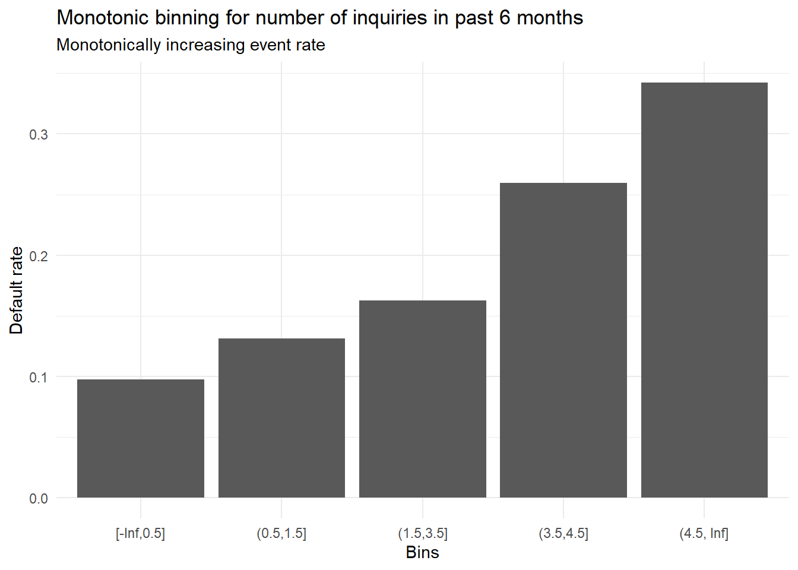
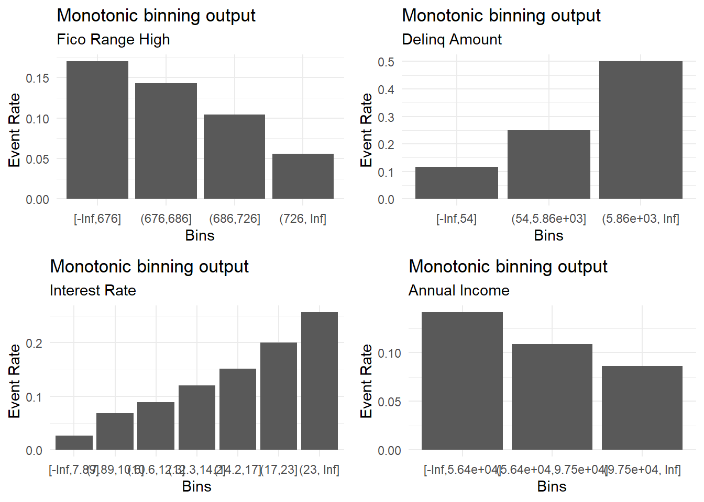

![]()
When developing credit risk scorecards, it is generally a good idea to discretise (bin) numeric variables in a manner that ensures monotonically increasing or decreasing event rates as the variable increases or decreases. While discretising individual variables adds stability to the model, monotonic bins ensure that the model output is consistent and interpretable (i.e. if variable ‘x’ increases, the computed score increases across each bin). We’ll explore how to do create monotonic bins in R using xgboost.
Libraries
# Pacman is a package management tool
install.packages("pacman")
library(pacman)
# p_load automatically installs packages if needed
p_load(recipes, dplyr, ggplot2, xgboost, gridExtra)
Sample dataset
Here’s a small sample sample of the Lending Club dataset available on Kaggle.
sample <- read.csv("credit_sample.csv")
dim(sample)
## [1] 10000 153
class(sample)
## [1] "data.frame"
Create a target
Like in my previous post, I’ll use the loan_status column as the target variable.
# Specific values to be tagged as 'bad'
codes <- c("Charged Off", "Does not meet the credit policy. Status:Charged Off")
model_data <- sample %>%
mutate(bad_flag = ifelse(loan_status %in% codes, 1, 0))
Data prep
We’ll use the recipes package to remove non numeric variables and impute missing values using. For additional details, see the documentation for recipes. Note that the formula inside the recipe() function decides which columns are predictors and which column is the target.
# Specify basic recipe
rec <- recipe(bad_flag ~ ., data = model_data) %>%
step_select(where(is.numeric)) %>%
step_impute_median(all_predictors())
rec <- prep(rec, training = model_data)
# Not doing a test/train split
train <- bake(rec, new_data = model_data)
Analysing directional trend
Now that we have a clean training dataset, its important to ascertain how the event rate should change when a particular variable changes. This is important since this directional trend will dictate how we constraint the xgboost model.
A good way to do this is to use both data and intuition. As an example, consider the variable inq_last_6mths (number of inquiries in the last 6 months). Intuitively, as the number of inquiries increase, one would expect the event rate (chance of default) to increase. We can validate this using a simple bar chart like the one shown below.
data.frame(x = model_data$inq_last_6mths,
y = model_data$bad_flag) %>%
filter(x <= 5) %>%
group_by(x) %>%
summarise(count = n(),
events = sum(y)) %>%
mutate(pct = events/count) %>%
ggplot(aes(x = factor(x), y = pct)) +
geom_col() +
theme_minimal() +
labs(x = "# of inquiries in past 6 months",
y = "Default rate",
title = "Default rate vs number of inquiries in past 6 months",
subtitle = "Positive relationship")

This confirms our hypothesis and also tells us that we need to constraint the xgboost model such the probability outcome increases as the value of the variable inq_last_6mths increases.
xgboost model
We’ll create an xgb model with the following specs:
- One boosting iteration
monotone_constraints= 1 (i.e. splits which only increase the probability outcome)max_depth= 10 (as an example, can be deeper if one needs additional bins)
mdl <- xgboost(
data = train %>%
select(inq_last_6mths) %>% ## Select only inq_last_6mths
as.matrix(), ## convert to matrix since the xgboost() interface only accepts matrices
label = train[["bad_flag"]], ## Target variable
nrounds = 1, ## Only one boosting iteration
params = list(objective = "binary:logistic", ## Binary outcome
monotone_constraints = 1,
max_depth = 10)) ## 1
## [10:48:08] WARNING: amalgamation/../src/learner.cc:1095: Starting in XGBoost 1.3.0, the default evaluation metric used with the objective 'binary:logistic' was changed from 'error' to 'logloss'. Explicitly set eval_metric if you'd like to restore the old behavior.
## [1] train-logloss:0.541928
Retrieving splits
Now that we have a model, we need to retrieve the split points and evaluate whether the binning scheme is intuitive (or not).
# Convert model into a dataframe like output
splits <- xgb.model.dt.tree(model = mdl)
# Add +/- Inf to provide coverage for values not observed
# in the training dataset
cuts <- c(-Inf, sort(splits$Split), Inf)
# Plot bins and event rates
data.frame(target = train$bad_flag,
buckets = cut(train$inq_last_6mths,
breaks = cuts,
include.lowest = T,
right = T,
ordered_result = T)) %>%
group_by(buckets) %>%
summarise(total = n(),
events = sum(target == 1)) %>%
mutate(pct = events/total) %>%
ggplot(aes(x = buckets, y = pct)) +
geom_col() +
theme_minimal() +
labs(x = "Bins",
y = "Default rate",
title = "Monotonic binning for number of inquiries in past 6 months",
subtitle = "Monotonically increasing event rate")

Creating a function
Finally, we can encapsulate everything we have done so far inside a function for better usability.
create_bins <- function(var, outcome, max_depth = 10, plot = T){
# Check if relationship is positive or negative
# Using spearman since it measures strength of monotonic relationship
corr <- cor(var, outcome, method = "spearman")
direction <- ifelse(corr > 0, 1, -1)
# Build XGB model
mdl <- xgboost(
verbose = 0,
data = as.matrix(var),
label = outcome,
nrounds = 1,
params = list(objective = "binary:logistic", ## Binary outcome
monotone_constraints = direction,
max_depth = max_depth,
eval_metric = "auc"))
# Retrieve splits
splits <- xgb.model.dt.tree(model = mdl)
cuts <- c(-Inf, sort(splits$Split), Inf)
binned <- cut(var,
breaks = cuts,
include.lowest = T,
right = T,
ordered_result = T)
# Create an event rate plot
plt <- data.frame(outcome, binned) %>%
group_by(binned) %>%
summarise(total = n(),
events = sum(outcome == 1)) %>%
mutate(pct = events/total) %>%
ggplot(aes(x = binned, y = pct)) +
geom_col() +
theme_minimal() +
labs(x = "Bins",
y = "Event Rate",
title = "Monotonic binning output")
if(plot == T){
print(plt)
}
# List to be returned
lst <- list(
var = var,
binned_var = binned,
cor = corr,
plot = plt
)
return(lst)
}
# Test function
v1 <- create_bins(train$fico_range_high, train$bad_flag, max_depth = 10, plot = F)
v2 <- create_bins(train$delinq_amnt, train$bad_flag, max_depth = 10, plot = F)
v3 <- create_bins(train$int_rate, train$bad_flag, max_depth = 10, plot = F)
v4 <- create_bins(train$annual_inc, train$bad_flag, max_depth = 10, plot = F)
grid.arrange(v1$plot + labs(subtitle = "Fico Range High"),
v2$plot + labs(subtitle = "Delinq Amount"),
v3$plot + labs(subtitle = "Interest Rate"),
v4$plot + labs(subtitle = "Annual Income"),
ncol = 2)

And that’s it! We can use what we just built to discretise variables we need, perform one-hot-encoding or WOE-transformations and feed the appropriate model matrix to our choice of statistical routine.
Parting notes
Check out this package called MonotonicOptimalBinning by Wensui Liu which offers multiple binning strategies like isotonic binning, quantile binning and k-means binning.
Thoughts? Comments? Helpful? Not helpful? Like to see anything else added in here? Let me know!